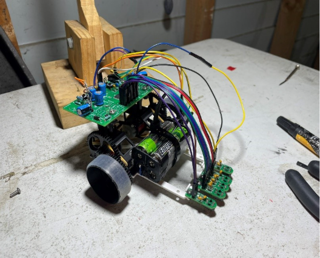
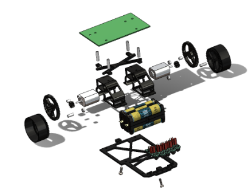

Mechanical Design / Controls
Line Follower Robot
A five-person team designed and built the robot from scratch: PCB, sensors, control code and the full mechanical platform. I led the mechanical design and build, the chassis, drivetrain, braking and the test setup, and was closely involved in the on-track tuning.

The braking problem
The PCB's H-bridge didn't work, so the robot had no active braking. It coasted into corners and overshot, which capped usable power at about 15% duty cycle. I built a mechanical brake from tensioned rubber bands, set so the band tension matched motor power. That let the robot run full power and still hold the corners.

The build
- Designed and 3D-printed the PLA chassis, iterating across 20-plus layouts to cut printed mass to around 35 to 40g while keeping it stiff.
- Set a 115mm track width and 55/45 weight distribution for predictable cornering.
- Built a two-stage 22:1 gearbox and cast silicone tyres for grip off the corners.
- Swapped the supplied axle rods for M3 shanked bolts on a dual-bearing setup to remove play and friction.
- Finished the mechanical build before the electronics arrived, so race week was just placement and fine-tuning.


Testing
Built a replica of the competition track in my garage so I could test between prints instead of waiting for lab time.

Placed third overall with a 6.150s lap, 0.14s off first.
Learned
A dead H-bridge could have sunk the project. Instead it forced improvisation on both sides: a stripped-back motor driver to get the robot running, then the brake and the mechanical work to make it quick. The lesson stuck with me. When time is tight, a fix you can build and test beats a perfect one you can't finish.
← Back to projects